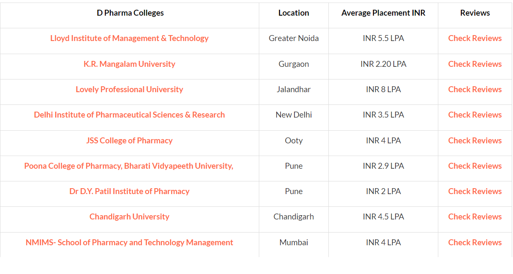
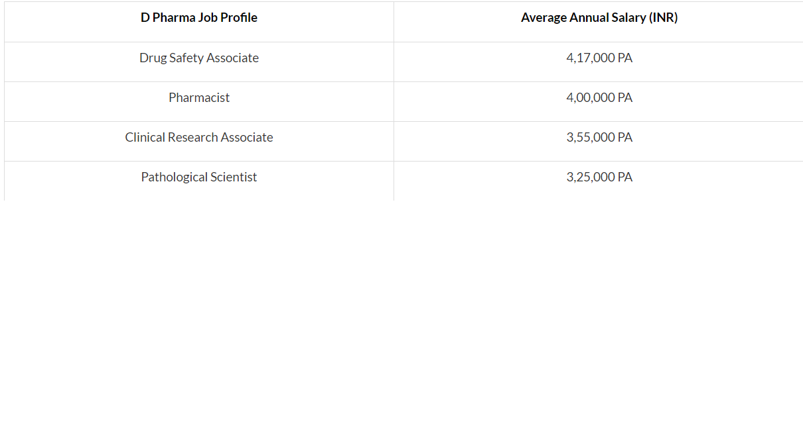
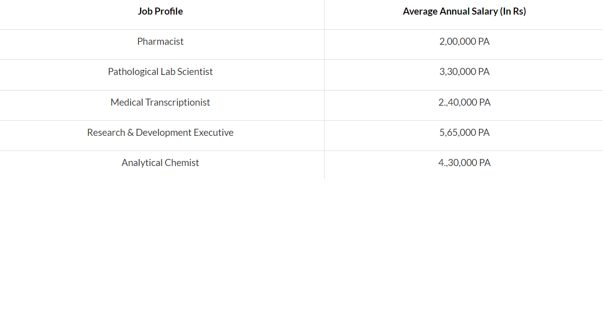

Diploma in Pharmacy is a two-year career-oriented diploma programme. Students interested in pursuing a long-term career in the medical field of pharmaceutical sciences and beginning a career in the pharmaceutical sector can enrol in the D Pharma programme. D Pharmacy Admission 2022 is determined by merit or through an admission exam. Candidates must have completed their 10+2 with a minimum of 50% aggregate marks to be eligible for the Diploma in Pharmacy programme. To pursue the D Pharmacy course, they must be from the Science Stream. The average yearly D Pharma course price ranges from INR 10,000 to INR 100,000. The D Pharmacy curriculum is designed to educate applicants to work in hospitals, community pharmacies, and other pharmaceutical-related industries under the supervision of a licenced pharmacist. Candidates may pursue an MBA in Pharmaceutical Management after completing this course, but they must first complete their undergraduate degree. Average Duration of D Pharmacy Course- 2 years D pharmacy Average Fee- 10k to 1 lakh annually Study Mode of D Pharmacy- Regular, Part-Time, Distance Learning
Candidates who have passed the 10th and 12th examinations with Physics and Chemistry, as well as one of the following subjects: Mathematics, Biotech, Biology, or Technical Vocational Subject, are eligible for admission to the first year of the D Pharm programme. Minimum 50 percent marks in Physics, Chemistry, Maths/Biotech/ Biology are required for admissions.. Apart from these, there are other criteria that are considered while selecting a candidate - Science stream in 10+2 Examination for a bachelor's degree Intermediate Examination in Science Any other qualification, such as any of the preceding examinations that has been accepted by the Pharmacy Council of India (PCI). The first year in a three-year Science degree programme.
India is a vast country with a large population, hence medicine is always in high demand. Thanks to the emergence of multiple large and global pharmaceutical businesses, the future of pharmacy appears to be quite bright. As a result, the area of pharmacy offers a diverse range of occupations, specialisations, and work opportunities. Students can pursue higher education and additional critical exploration through B Pharma and other Diploma degrees after completing this programme. This course primarily serves as a good foundation for subsequent research and related opportunities. With a D Pharma degree, candidates can work in a range of settings. They can choose between governmental and private sector jobs. D Pharma jobs can be found in a variety of sectors in India. D Pharma graduates have numerous job opportunities in both the private and public sectors. The healthcare sector in India is quickly growing, resulting in a surge in pharmaceutical job openings. Here are the following career options to choose after D Pharma:
The government in India controls the majority of the healthcare industry. Analytical chemist, Food and Drug Inspector, Pharmacist, Chemical/Drug Technician, and other D Pharma jobs are accessible in government bodies. Candidates are often hired after completing an admissions exam and a personal interview with graduates. A D Pharma makes between INR 2 and 5 lakhs per annum in India. Government jobs are available at a variety of institutions and departments, including State and Central Hospitals, Research and Development Units, Clinics, the Indian Army, and the Defense Services. Some examples of government job titles and pay scales are as follows:
After obtaining a doctorate in pharmacy, you may seek employment in the private sector. There are several job opportunities in the private sector for D Pharma students. Many research-oriented organisations, such as pathology labs, pharmaceutical companies, and so on, have private positions available. After completing the course, students can either find a job or pursue higher study, such as a B Pharma degree. For a D pharmacist, pay ranges from INR 2.5 to 6 lakhs per annum Some of the job titles and pay rates are as follows:
In the Indian Army, there are various jobs and vacancies for D pharmacy graduates. The Indian Army recruits a wide range of pharmacy professionals. They provide medical support to the army's medical section. Sepoy Pharma is an Indian Army station that handles the army's pharmaceutical requirements: Candidates for these roles must be between the ages of 19 and 25, have a height of 170 cm, and weigh at least 50 kg. D Pharma degree with a minimum aggregate of 55% and registration with the State Pharmaceutical Council / Pharmacy Council of India. Individuals having a B Pharma degree and registration with the State Pharmaceutical Council/Indian Pharmacy Council are also eligible.